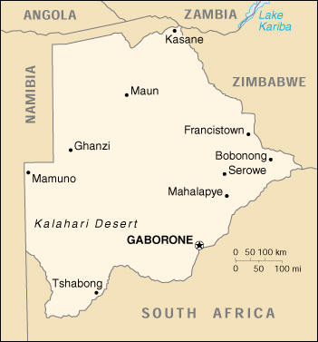

|
Botswana | |
| Introduction Geography People Government Economy Communications Transportation Military Transnational Issues | ||
|  | ||
| Botswana | Introduction | Top of Page |
| Background: | Formerly the British protectorate of Bechuanaland, Botswana adopted its new name upon independence in 1966. The economy, one of the most robust on the continent, is dominated by diamond mining. |
| Botswana | Geography | Top of Page |
| Location: | Southern Africa, north of South Africa |
| Geographic coordinates: | 22 00 S, 24 00 E |
| Map references: | Africa |
| Area: |
total:
600,370 sq km
land: 585,370 sq km water: 15,000 sq km |
| Area - comparative: | slightly smaller than Texas |
| Land boundaries: |
total:
4,013 km
border countries: Namibia 1,360 km, South Africa 1,840 km, Zimbabwe 813 km |
| Coastline: | 0 km (landlocked) |
| Maritime claims: | none (landlocked) |
| Climate: | semiarid; warm winters and hot summers |
| Terrain: | predominantly flat to gently rolling tableland; Kalahari Desert in southwest |
| Elevation extremes: |
lowest point:
junction of the Limpopo and Shashe Rivers 513 m
highest point: Tsodilo Hills 1,489 m |
| Natural resources: | diamonds, copper, nickel, salt, soda ash, potash, coal, iron ore, silver |
| Land use: |
arable land:
1%
permanent crops: 0% permanent pastures: 46% forests and woodland: 47% other: 6% (1993 est.) |
| Irrigated land: | 20 sq km (1993 est.) |
| Natural hazards: | periodic droughts; seasonal August winds blow from the west, carrying sand and dust across the country, which can obscure visibility |
| Environment - current issues: | overgrazing; desertification; limited fresh water resources |
| Environment - international agreements: |
party to:
Biodiversity, Climate Change, Desertification, Endangered Species, Hazardous Wastes, Law of the Sea, Nuclear Test Ban, Ozone Layer Protection, Wetlands
signed, but not ratified: none of the selected agreements |
| Geography - note: | landlocked; population concentrated in eastern part of the country |
| Botswana | People | Top of Page |
| Population: |
1,586,119
note: estimates for this country explicitly take into account the effects of excess mortality due to AIDS; this can result in lower life expectancy, higher infant mortality and death rates, lower population and growth rates, and changes in the distribution of population by age and sex than would otherwise be expected (July 2001 est.) |
| Age structure: |
0-14 years:
40.3% (male 321,164; female 318,007)
15-64 years: 55.56% (male 423,954; female 457,227) 65 years and over: 4.14% (male 26,691; female 39,076) (2001 est.) |
| Population growth rate: | 0.47% (2001 est.) |
| Birth rate: | 28.85 births/1,000 population (2001 est.) |
| Death rate: | 24.18 deaths/1,000 population (2001 est.) |
| Net migration rate: | 0 migrant(s)/1,000 population (2001 est.) |
| Sex ratio: |
at birth:
1.03 male(s)/female
under 15 years: 1.01 male(s)/female 15-64 years: 0.93 male(s)/female 65 years and over: 0.68 male(s)/female total population: 0.95 male(s)/female (2001 est.) |
| Infant mortality rate: | 63.2 deaths/1,000 live births (2001 est.) |
| Life expectancy at birth: |
total population:
37.13 years
male: 36.77 years female: 37.51 years (2001 est.) |
| Total fertility rate: | 3.7 children born/woman (2001 est.) |
| HIV/AIDS - adult prevalence rate: | 35.8% (1999 est.) |
| HIV/AIDS - people living with HIV/AIDS: | 290,000 (1999 est.) |
| HIV/AIDS - deaths: | 24,000 (1999 est.) |
| Nationality: |
noun:
Motswana (singular), Batswana (plural)
adjective: Motswana (singular), Batswana (plural) |
| Ethnic groups: | Tswana (or Setswana) 79%, Kalanga 11%, Basarwa 3%, other, including Kgalagadi and white 7% |
| Religions: | indigenous beliefs 50%, Christian 50% |
| Languages: | English (official), Setswana |
| Literacy: |
definition:
age 15 and over can read and write
total population: 69.8% male: 80.5% female: 59.9% (1995 est.) |
| Botswana | Government | Top of Page |
| Country name: |
conventional long form:
Republic of Botswana
conventional short form: Botswana former: Bechuanaland |
| Government type: | parliamentary republic |
| Capital: | Gaborone |
| Administrative divisions: | 10 districts and four town councils*; Central, Chobe, Francistown*, Gaborone*, Ghanzi, Kgalagadi, Kgatleng, Kweneng, Lobatse*, Ngamiland, North-East, Selebi-Pikwe*, South-East, Southern |
| Independence: | 30 September 1966 (from UK) |
| National holiday: | Independence Day, 30 September (1966) |
| Constitution: | March 1965, effective 30 September 1966 |
| Legal system: | based on Roman-Dutch law and local customary law; judicial review limited to matters of interpretation; has not accepted compulsory ICJ jurisdiction |
| Suffrage: | 18 years of age; universal |
| Executive branch: |
chief of state:
President Festus MOGAE (since 1 April 1998) and Vice President Seretse Ian KHAMA (since 13 July 1998); note - the president is both the chief of state and head of government
head of government: President Festus MOGAE (since 1 April 1998) and Vice President Seretse Ian KHAMA (since 13 July 1998); note - the president is both the chief of state and head of government cabinet: Cabinet appointed by the president elections: president elected by the National Assembly for a five-year term; election last held 16 October 1999 (next to be held NA October 2004); vice president appointed by the president election results: Festus MOGAE elected president; percent of National Assembly vote - 54.3% |
| Legislative branch: |
bicameral Parliament consists of the House of Chiefs (a largely advisory 15-member body consisting of the chiefs of the eight principal tribes, four elected subchiefs, and three members selected by the other 12) and the National Assembly (44 seats, 40 members are directly elected by popular vote and 4 appointed by the majority party; members serve five-year terms)
elections: National Assembly elections last held 16 October 1999 (next to be held NA October 2004) election results: percent of vote by party - BDP 57.2%, BNF 26%, other 16.8%; seats by party - BDP 33, BNF 6, other 1 |
| Judicial branch: | High Court; Court of Appeal; Magistrates' Courts (one in each district) |
| Political parties and leaders: |
Botswana Democratic Party or BDP [Festus MOGAE]; Botswana National Front or BNF [Kenneth KOMA]; Botswana Congress Party or BCP [Michael DINGAKE]; Botswana Alliance Movement or BAM [Ephraim Lepetu SETSHWAELO]
note: main parties are: BDP, BNF, BCP; other minor parties joined forces in 1999 to form the Botswana Alliance Movement or BAM [Ephraim SETSHWAELO, chairman] but did not capture any parliamentary seats; the BAM parties are: the United Action Party [Ephraim Lepetu SETSHWAELO], the Botswana Peoples Party, the Independence Freedom Party [Motsamai MPHO], and the Botswana Progressive Union [D. K. KWELE] |
| Political pressure groups and leaders: | NA |
| International organization participation: | ACP, AfDB, C, CCC, ECA, FAO, G-77, IBRD, ICAO, ICFTU, ICRM, IDA, IFAD, IFC, IFRCS, ILO, IMF, Intelsat, Interpol, IOC, ISO, ITU, NAM, OAU, OPCW, SACU, SADC, UN, UNCTAD, UNESCO, UNIDO, UPU, WFTU, WHO, WIPO, WMO, WToO, WTrO |
| Diplomatic representation in the US: |
chief of mission:
Ambassador Kgosi SEEPAPITSO IV
chancery: 1531-1533 New Hampshire Avenue NW, Washington, DC 20036 telephone: [1] (202) 244-4990 FAX: [1] (202) 244-4164 |
| Diplomatic representation from the US: |
chief of mission:
Ambassador John E. LANGE
embassy: address NA, Gaborone mailing address: P. O. Box 90, Gaborone telephone: [267] 353982 FAX: [267] 356947 |
| Flag description: | light blue with a horizontal white-edged black stripe in the center |
| Botswana | Economy | Top of Page |
| Economy - overview: | Botswana has maintained one of the world's highest growth rates since independence in 1966. Through fiscal discipline and sound management, Botswana has transformed itself from one of the poorest countries in the world to a middle-income country with a per capita GDP of $6,600 in 2000. Diamond mining has fueled much of Botswana's economic expansion and currently accounts for more than one-third of GDP and for three-fourths of export earnings. Tourism, subsistence farming, and cattle raising are other key sectors. The government must deal with high rates of unemployment and poverty. Unemployment officially is 19%, but unofficial estimates place it closer to 40%. HIV/AIDS infection rates are the highest in the world and threaten Botswana's impressive economic gains. |
| GDP: | purchasing power parity - $10.4 billion (2000 est.) |
| GDP - real growth rate: | 6% (2000 est.) |
| GDP - per capita: | purchasing power parity - $6,600 (2000 est.) |
| GDP - composition by sector: |
agriculture:
4%
industry: 46% (including 36% mining) services: 50% (1998 est.) |
| Population below poverty line: | 47% (2000 est.) |
| Household income or consumption by percentage share: |
lowest 10%:
NA%
highest 10%: NA% |
| Inflation rate (consumer prices): | 8.6% (2000 est.) |
| Labor force: | 235,000 formal sector employees (1995) |
| Labor force - by occupation: | 100,000 public sector; 135,000 private sector, including 14,300 who are employed in various mines in South Africa; most others engaged in cattle raising and subsistence agriculture (1995 est.) |
| Unemployment rate: | 40% (2000 est.) |
| Budget: |
revenues:
$1.6 billion
expenditures: $1.8 billion, including capital expenditures of $560 million (FY96) |
| Industries: | diamonds, copper, nickel, coal, salt, soda ash, potash; livestock processing |
| Industrial production growth rate: | 6.2% (2000 est.) |
| Electricity - production: | 610 million kWh (1999) |
| Electricity - production by source: |
fossil fuel:
100%
hydro: 0% nuclear: 0% other: 0% (1999) |
| Electricity - consumption: | 1.517 billion kWh (1999) |
| Electricity - exports: | 0 kWh (1999) |
| Electricity - imports: | 950 million kWh (1999) |
| Agriculture - products: | sorghum, corn, millet, pulses, groundnuts (peanuts), beans, cowpeas, sunflower seed; livestock |
| Exports: | $2.6 billion (f.o.b., 2000 est.) |
| Exports - commodities: | diamonds 72%, vehicles, copper, nickel, meat (1998) |
| Exports - partners: | EU 77%, Southern African Customs Union (SACU) 18%, Zimbabwe 3% (1998) |
| Imports: | $2.2 billion (f.o.b., 2000 est.) |
| Imports - commodities: | foodstuffs, machinery and transport equipment, textiles, petroleum products |
| Imports - partners: | Southern African Customs Union (SACU) 76%, Europe 10%, South Korea 5% (1998) |
| Debt - external: | $455 million (2000) |
| Economic aid - recipient: | $73 million (1995) |
| Currency: | pula (BWP) |
| Currency code: | BWP |
| Exchange rates: | pulas per US dollar - 5.4585 (January 2001), 5.1018 (2000), 4.6244 (1999), 4.2259 (1998), 3.6508 (1997), 3.3242 (1996) |
| Fiscal year: | 1 April - 31 March |
| Botswana | Communications | Top of Page |
| Telephones - main lines in use: | 86,000 (1997) |
| Telephones - mobile cellular: | NA |
| Telephone system: |
general assessment:
sparse system
domestic: small system of open-wire lines, microwave radio relay links, and a few radiotelephone communication stations international: two international exchanges; digital microwave radio relay links to Zambia, Zimbabwe, and South Africa; satellite earth station - 1 Intelsat (Indian Ocean) |
| Radio broadcast stations: | AM 7, FM 15, shortwave 5 (1998) |
| Radios: | 237,000 (1997) |
| Television broadcast stations: | 0 (1997) |
| Televisions: | 31,000 (1997) |
| Internet country code: | .bw |
| Internet Service Providers (ISPs): | 3 (2000) |
| Internet users: | 12,000 (2000) |
| Botswana | Transportation | Top of Page |
| Railways: |
total:
888 km
narrow gauge: 888 km 1.067-m gauge (2000) |
| Highways: |
total:
18,482 km
paved: 4,343 km unpaved: 14,139 km (1996) |
| Waterways: | none |
| Ports and harbors: | none |
| Airports: | 92 (2000 est.) |
| Airports - with paved runways: |
total:
11
2,438 to 3,047 m: 2 1,524 to 2,437 m: 8 914 to 1,523 m: 1 (2000 est.) |
| Airports - with unpaved runways: |
total:
81
1,524 to 2,437 m: 3 914 to 1,523 m: 56 under 914 m: 22 (2000 est.) |
| Botswana | Military | Top of Page |
| Military branches: | Botswana Defense Force (includes Army and Air Wing), Botswana National Police |
| Military manpower - military age: | 18 years of age |
| Military manpower - availability: | males age 15-49: 380,152 (2001 est.) |
| Military manpower - fit for military service: | males age 15-49: 199,995 (2001 est.) |
| Military manpower - reaching military age annually: | males: 19,479 (2001 est.) |
| Military expenditures - dollar figure: | $61 million (FY99) |
| Military expenditures - percent of GDP: | 1.2% (FY99) |
| Botswana | Transnational Issues | Top of Page |
| Disputes - international: | none |
{kind=link}
{kind=link}